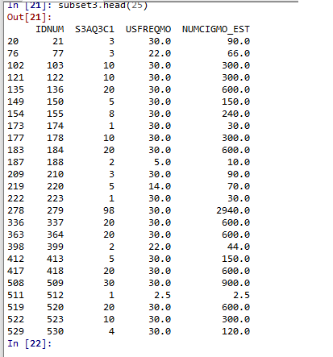
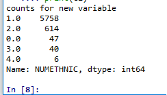
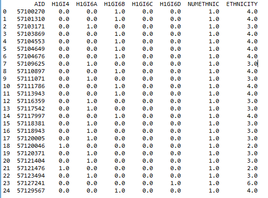
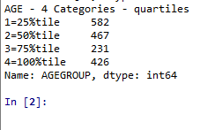
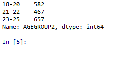
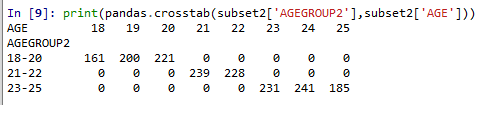

An important step in the data preparation stage of analytics includes the creation of new data, usually in the form of additional variables.
The solution python files for lab02 are available here
Save lab02.py to your working directory and run it to make sure it works.
If you are confused about the use of Pandas and in particular the DataFrame structure, take a look at the following site for help:
The series data structure in Pandas is a 1-dimensional array to hold any datatype for example:
pd.series(5, 6, 7, 4, 5)We have used this when we created a dictionary for recoding in step 4 of lab 2.
recode1= {1: 6, 2: 5, 3: 4, 4: 3, 5: 2, 6: 1}The dataframe data structure in Pandas is a 2-dimensional array with columns of potentially different types. We think of it like a spreadsheet.
One of the later steps in data management is evaluating whether you might want to create secondary variables. They are variables that include information from two or more primary variables.
We can create secondary variables by using a mathematical or logical operation on two or more variables.
For our set of data we want to know the number of cigarettes smoked per month. We created a new variable USFREQMO in the last lab which tells us an estimate of the number smoking days in a month for each respondent. If you look at the codebook the variable S3AQ3C1 holds values to answer the question of usual quantity per day.
We can simply multiple these two variables and the result represents the number of cigarettes per month smoked by respondents. We can call this new variable NUMCIGNO_EST
subset2['NUMCIGMO_EST'] = subset2['USFREQMO'] * subset2['S3AQ3C1']Sometimes an error will occur to say you cannot do this operation due to datatypes being incompatible. You may need to make sure the variable S3AQ3C1 is in fact a number, you can add this piece of code to ensure this and then re-run the code above.
subset2['S3AQ3C1']=pandas.to_numeric(subset2['S3AQ3C1'])How can we check to make sure this new secondary variable was created as intended?
We will use a new statement that allows us to subset our data frame to only those variables we wish to see.
subset3=subset2[['IDNUM','S3AQ3C1',USFREQMO', 'NUMCIGMO_EST']]
subset3.head(25)
You can do a quick scan to ensure the operation was correct by multiplying the third column of data with the fourth to produce the last column of data.
What you see in the above screenshot are the individual observations and the estimated number of cigarettes smoked in a month. This is a useful way to double check our work and make sure no errors have occurred.
What if we want to combine more than two variables?
For this task we are going to use the Add Health data.
Download this zip and extract the .csv file, store in the same directory as your python scripts (setup in lab1)
Create a new file called lab3_step2.py and enter the following code:
import pandas
import numpy
data = pandas.read_csv('addhealth_pds.csv')A good example of combining more than one variable is to create a secondary variable to characterise ethnicity from a number of separate primary variables in the Add Health data. In this data set race or ethnicity are measured by a series of questions, coded 1 if yes and 0 if no.
Some respondents could've indicated more than one race or ethnicity, we could decide to characterise those adolescents who indicate multiple racial or ethical groups separately from those who could be characterised with a single ethnicity.
Open the codebook that was part of the zip file you downloaded. Open the pdf name INH01PUB.pdf and scroll to question 4. The variables are named here and the values with frequencies are listed.
The new variable to create will be called NUMETHNIC, it will indicate the number of race or ethnicity variables that were endorsed. To do this we must sum the variables, so we must ensure they are of numerical data type.
data['H1GI4'] = pandas.to_numeric(data['H1GI4'])
data['H1GI6A'] = pandas.to_numeric(data['H1GI6A'])
data['H1GI6B'] = pandas.to_numeric(data['H1GI6B'])
data['H1GI6C'] = pandas.to_numeric(data['H1GI6C'])
data['H1GI6D'] = pandas.to_numeric(data['H1GI6D'])Refer back to the code book and you will see that each of these variables has a potential value of 6 which means refused to answer, and 8 which means don't know. We will need to deal with this missing data so it is no included in our sum operation.
data['H1GI4'] = data['H1GI4'].replace([6,8], numpy.nan)
data['H1GI6A'] = data['H1GI6A'].replace([6,8], numpy.nan)
data['H1GI6B'] = data['H1GI6B'].replace([6,8], numpy.nan)
data['H1GI6C'] = data['H1GI6C'].replace([6,8], numpy.nan)
data['H1GI6D'] = data['H1GI6D'].replace([6,8], numpy.nan)The following code with sum each of the variables and place the results into the new variable called NUMETHNIC
data['NUMETHNIC'] = data['H1GI4'] + data['H1GI6A'] + data['H1GI6B'] + data['H1GI6C'] + data['H1GI6D']Write the appropriate code to print out the following:

Next we add statements that create a single secondary variable that characterizes each adolescents ethnicity.
We use the Define function shown here as def to create a new variable called ETHNICITY
Read the appropriate section in the code book to familiarise yourself with variables H1GI4, H1GI6A, H1GI6B, H1GI6C, and H1GI6D. These are used to code the new variable ETHNICITY.
def ETHNICITY (row):
if row['NUMETHNIC']>1:
return 1
if row['H1GI4'] ==1:
return 2
if row['H1GI6A'] ==1:
return 3
if row['H1GI6B'] ==1:
return 4
if row['H1GI6C']==1:
return 5
if row['H1GI6D']==1:
return 6
data['ETHNICITY'] = data.apply(lambda row: ETHNICITY (row), axis=1)The row code defines a temporary variable to be used in the function. Then we use the apply function to actually create the new variable in the dataset. Axis=1 tells Python to apply the function to each row.
Note that the lambda operator/function is a way to create small anonymous functions (functions without a name). These functions are throwaways (like callback functions in JavaScript or PHP) That is, they are just needed where they are created. Lambda functions are commonly used in combination with the functions filter(), map(), and reduce().
So if NUMETHNIC the new variable ETHNICITY will return 1 indicating multiple racial or ethnic groups chosen.
All other codes then indicate a particular race for example:
Consider what you have learned and attempt to write the necessary code to print out the counts for each of these variables including the AID variable and NUMETHNIC and ETHNICITY so you can see the following first 25 rows. Use a subset of the data which just contains the variables you need.

If you can not see all columns you can set the following option to expand the visible columns:
pandas.set_option('display.max_columns',20);This sets the maximum columns displayed to 20.
Once you have created secondary variables such as USFREQMO and NUMCIGMO_EST you can then consider whether any of your quantitative variables or categorical variables need to be further grouped or binned.
Currently AGE is a quantitative variable in the NESARC dataset, if we want to compare age groups categorically we need to group the values.
The first way we can group the values is by quartiles, remember these represent 25, 50, 75 and 100% of the dataset.
To do this we use the pandas.qcut() function passing as parameters the variable to be grouped, the number of quartiles and a list of variable names for each quartile.
We call the new variable AGEGROUP
#Step 4 regroup values
#quartile split qcut function into 4 groups
print('AGE - 4 Categories - quartiles')
subset2['AGEGROUP'] = pandas.qcut(subset2.AGE, 4, labels=['1=25%tile','2=50%tile','3=75%tile','4=100%tile'])
c14= subset2['AGEGROUP'].value_counts(sort=False, dropna=True)
print(c14)
It is also an option to create custom splits using pandas cut function.
#categorise variable based on customised splits using the cut() functions
# splits into three groups, 18-20, 21-22, and 23-25
subset2['AGEGROUP2']= pandas.cut(subset2.AGE, [17, 20, 22, 25], labels=['18-20','21-22','23-25'])
c15 = subset2['AGEGROUP2'].value_counts(sort=False, dropna=True)
print(c15)
To compare the different groups of ages we can now run a crosstab on the agegroup2 variable
print(pandas.crosstab(subset2['AGEGROUP2'],subset2['AGE']))
Write a statement to output the value counts as percentages for the agegroup2 variable.
Apply what you have learned in this lab to your continuous assessment.